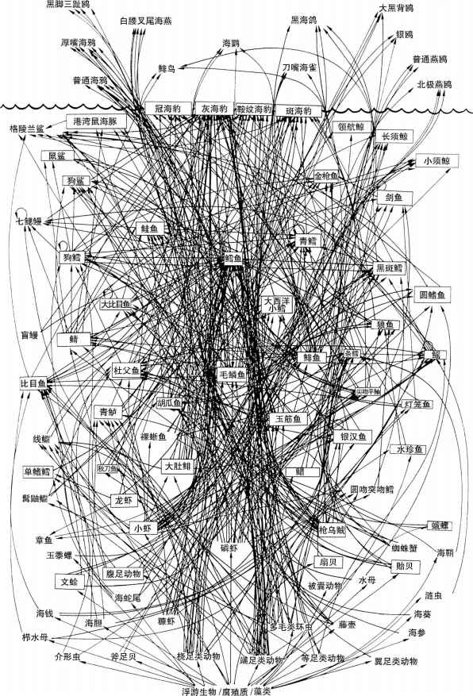

网络存在于许多人的日常生活之中。通常的一天里，我们都会查收电子邮件，更新社交网络上的个人资料，打移动电话，使用公共交通工具，乘坐飞机，转移货币和货物，或者开始新的私人和业务关系等等。我们在所有这些情况中——有意或无意地——都会涉及网络及其特性。同样地，网络也会出现在重要的全球现象中。金融危机会在银行和公司的联系网络中产生多米诺效应。流行病，比如禽流感、非典型肺炎或者猪流感，则在机场网络之间蔓延。气候变化能够改变生态系统内部不同物种之间的关系网络，恐怖主义和战争则瞄准了一国之中的基础设施网络。电网内会发生大规模停电，计算机病毒在互联网中传播，政府和企业则会通过人们的社交网络和其他数字通信工具来追踪他们的身份信息。最后，遗传学的各种应用取决于人们对在细胞内部起作用的基因调控网络知识的掌握。
在所有这些情况中，我们都会处理大量不同元素（个人、公司、机场、物种、发电站、计算机、基因……）的集合，它们通过无序的多种相互作用模式而彼此关联，即它们都有着某种潜在的网络结构。通常，这种隐含的网络结构是理解前述重要现象的1关键所在。其中一个很好的例子便是上世纪80年代大西洋西北海域鳕鱼种群的衰竭。当时，鳕鱼的短缺给加拿大水产业造成了巨大的经济危机。加拿大境内的利益相关者吁求更多地猎捕海豹，他们认为控制鳕鱼捕食者的数量有助于阻止鳕鱼种群的衰竭。大量的海豹在上世纪90年代遭到猎杀，但鳕鱼种群并未恢复。与此同时，生态学家们则对关联鳕鱼和海豹的不同食物链进行了研究。到上世纪90年代末期，他们已经为研究发现的关联这两个物种的大量不同食物链条绘制了一幅详尽的网络图（图1）。根据这个复杂的网络图，捕杀鳕鱼捕食者并不必然有助于鳕鱼种群的恢复。比如，海豹捕食大约150种猎物，其中也包括鳕鱼的其他捕食者。因此，海豹种群数量的减少便增加了其他鳕鱼捕食者对其种群数量所造成的压力。
生态系统乃复杂的物种网络：如果我们想要理解并管理这些物种，将这种底层的网络结构纳入考虑范围则至关重要。我们对其他一些基于网络结构的系统也必须采取类似的谨慎态度。例如，像艾滋病之类的传染病的蔓延就受到某些人群内部无保护性关系模式的强烈影响。同样，流动性冲击则取决于银行间货币交换网络的相互交织。
上述所有例子都是所谓涌现现象 的例子。此种现象乃无法通过观察构成系统的单个元素而进行预测的集体行为。通常，呈现这些现象的系统被称为复杂系统 。比如，单个的蚂蚁是相对笨拙的昆虫，但众多蚂蚁一起则能够进行如修建蚁冢或者储存大量食物这样复杂的活动。而在人类社会中，社会秩序产生于自主个体的结合，尽管他们的利益往往相互冲突，但最终仍然合力执行凭一己之力无法完成的任务。类似地，某个鲜活有机体的生命力来自其不同组分的相互作用；互联网应对错误、攻击和信息量高峰的非凡弹性是网络作为整体的性能，而非单个机器运行的结果。

图1 加拿大东部西北大西洋“斯科舍大陆架”食物网局部图。箭头方向从捕食者指向猎物
网络及其所强调的互动，乃理解诸多此类现象的关键。设想两支足球队的球员水准十分相近，最终表现却差异甚远。这种差异很可能取决于球员们在场上相互配合的好坏程度。类似地，单个球员可能在联盟球队中表现尚好，而在国家队中却表现欠佳，因为该球员在两个团队中的相对位置有所不同。团队的表现是某种涌现现象，它不仅取决于单个参与者的才能或个体技艺的总和，而且还取决于参与者之间所形成的互动网络。许多涌现现象都严重依赖于其底层的网络结构。
网络方法将所有注意力都集中在了单个系统内相互作用的全局结构之上，而每个组成部分的具体属性均被忽略。结果，像计算机网络、生态系统或者社会群体等十分不同的系统都用同一种工具来描绘，那就是图 （graph），即由多种关联所结成的一种单一的节点架构。这个方法最初由莱昂哈德·欧拉在数学领域发展起来，之后扩展至广泛的学科领域，包括大量使用这种方法的社会学，以及最近的物理学、工程学、计算机科学、生物学和其他诸多学科领域。
使用同一种工具来表现差异显著的不同系统只能以某种高度抽象的方式完成。系统细节描述的缺失在普适 形式中得到弥补，即将十分不同的系统视作相同理论结构的不同实现形式而加以考虑。由此观之，计算机病毒的传播可能与流感类似；劫持一个路由器可能与某个物种在生态系统中的灭绝有着相同的影响；而万维网的增长则能与科学文献的增长放在一起比较。
这条推理线索提供了诸多洞见。比如，把系统呈现为图能让我们察觉到那些将明显不相关元素囊括在内的大规模结构。2003年，瑞士电网中的一个小事故触发了一场大规模停电事件，其影响波及1 000公里之外的西西里岛。专注网络结构让我们看到，遥远事物之间最终可能通过难以置信的关系或传播短路径而强烈地关联着。地理和社会上相互隔离的两个个体——比如某个热带雨林中的居民和伦敦金融城中的某位经理——仅通过六度分隔（six degrees of separation）就能相互关联，这个最近的观察与现实相去不远。并且，这种现象可用社会关系的网络结构加以解释。
网络方法还揭示出系统的另一个重要特征，即某些不受外部控制而发展起来的系统仍然能够随机发展出某种内部秩序。细胞或生态系统并非“设计”而成，但仍以某种牢固的方式起作用。类似地，社会群体及社会趋势源于大量不同的压力和动机，但仍然展现出清晰和确定的图景。而互联网和万维网则在缺乏任何监管机构的情况下兴盛起来，并由大量不相关的因素所推动，但它们通常还是按照一致且有效的方式运转。所有这些现象都是自组织过程 ，即系统内部秩序和组织并非外部干预或整体设计的结果，而是局部机制或倾向在成千上万次相互作用中迭代产生的现象。网络模型能够以清楚和自然的方式描述自组织在诸多系统中是如何产生的。同样，网络让我们能够更好地理解诸如计算机病毒的快速传播、大规模流行病、基础设施的突然崩溃，以及社交恐惧症或音乐流行之爆发等各种动态过程。
在复杂、涌现以及自组织系统的研究领域（即关于复杂性的现代科学）中，网络作为通用的数学框架而变得愈发重要，涉及大量数据时尤其如此。这通常体现于个人在搜索引擎中的累积查询、社交网站的更新、在线支付、信用卡数据、金融交易、移动电话中的GPS（全球定位系统）位置等情况中。在所有这些情形下，网络对于整理和组织这些数据，进而将个人、产品和新闻等相互关联而言是重要的工具。类似地，分子生物学则越来越依赖计算策略以便在其自身产生的大量数据中找到秩序。科学、技术、健康、环境和社会等许多其他领域也是如此。在所有6这些情况中，网络正成为揭示复杂性之隐藏结构的典范。